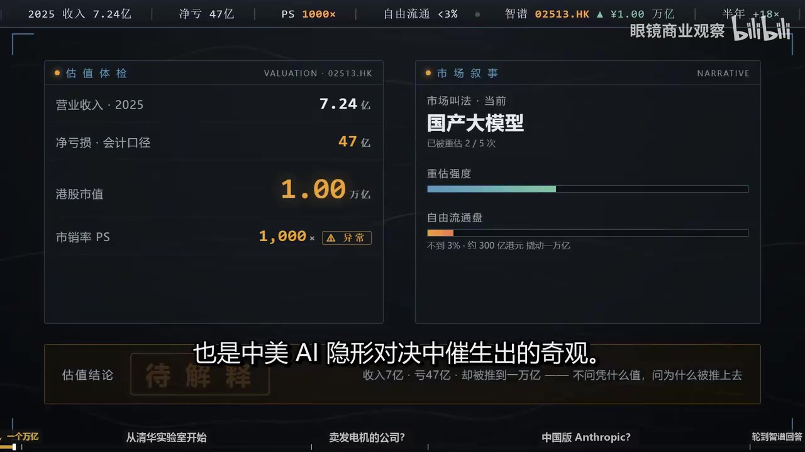
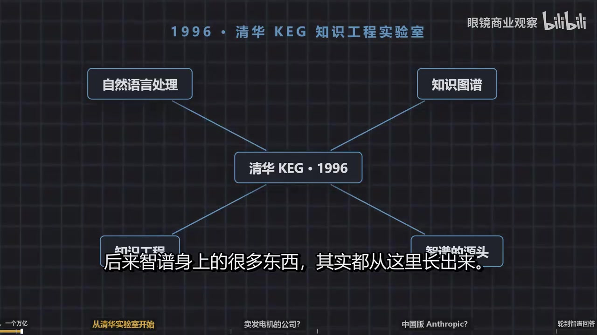
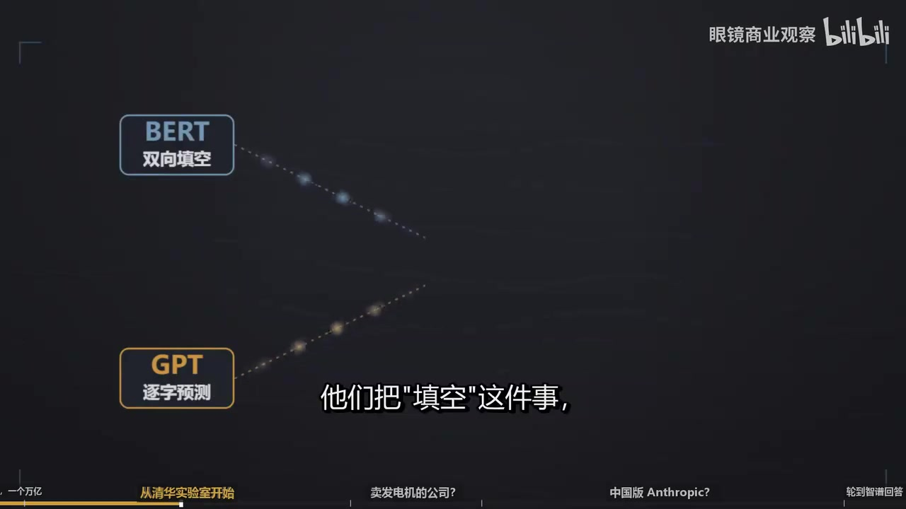
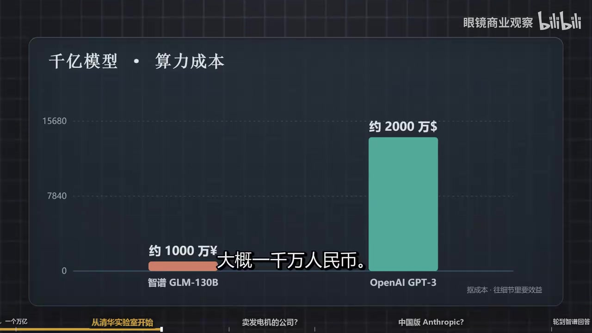
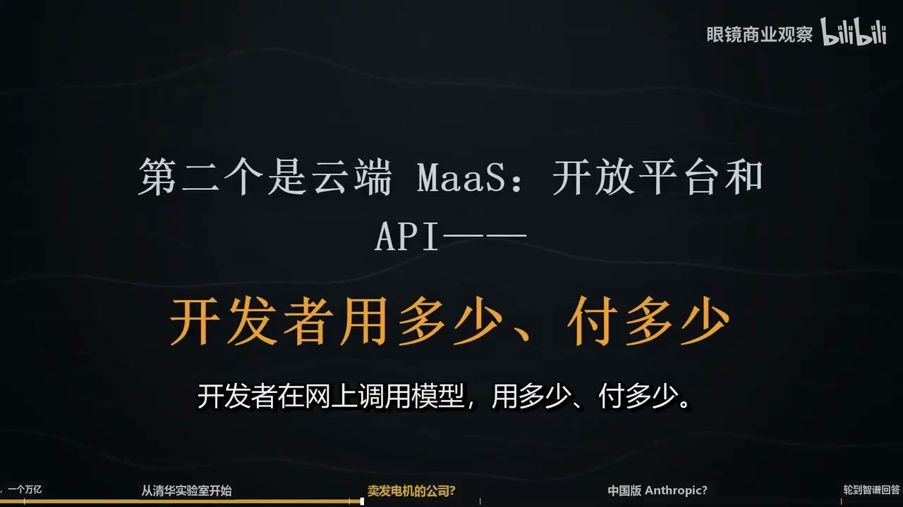
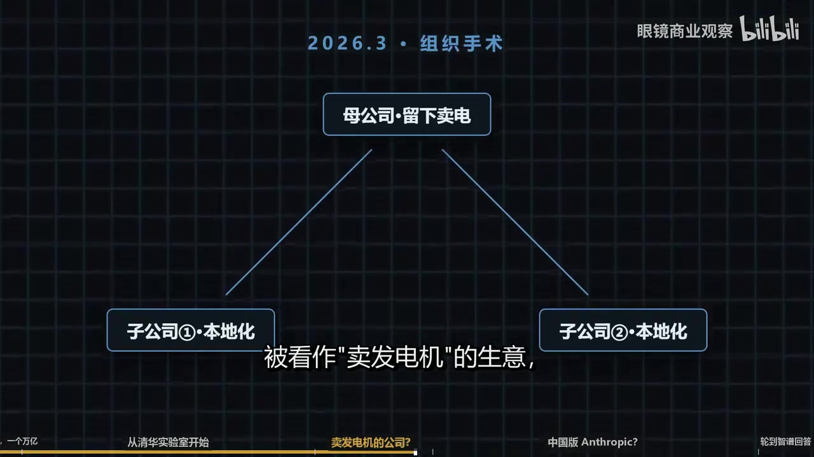
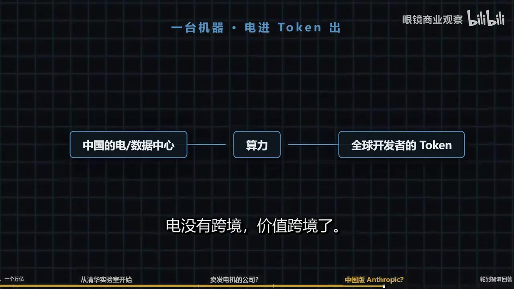
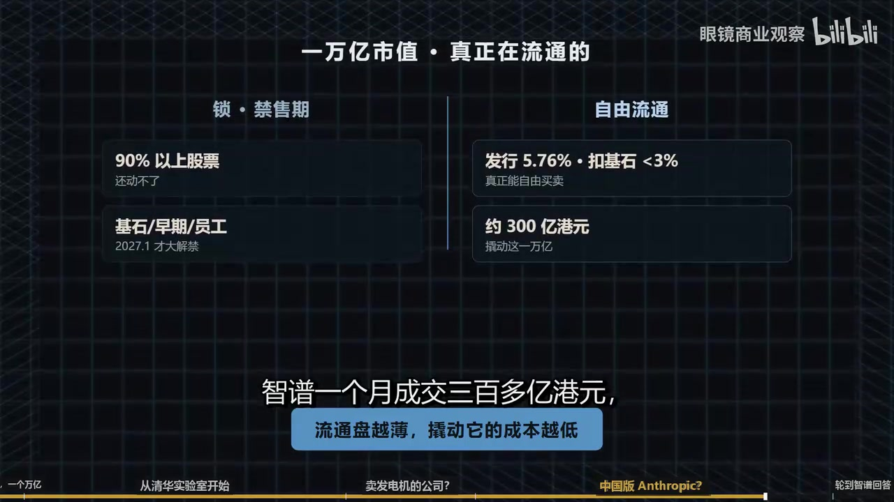
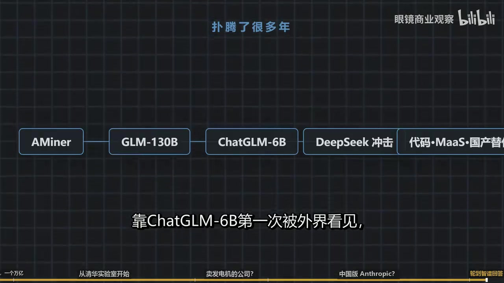

01｜智谱起源：清华KEG实验室与早期技术押注
00:00:00旁白2026年6月22日星期一，香港中环的交易员们见证了一个疯狂的上午：上市仅半年的智谱股价盘中暴涨，市值一度冲破1.3万亿港元，已将拼多多、小米、网易、百度等一系列科技巨头远远甩在身后。但翻开智谱的账本，2025年这家公司的总收入仅有7亿元。7亿元的现实，1.3万亿的狂热——这是资本市场提前发下的一张考题，也是中美AI隐形对决中催生出的奇观。这场由时代和地缘在深处催生的巨幅对撞，在2026年这个夏天的港股盘面上，变成了一场向未来借时间的豪赌。

00:00:44旁白智谱的源头是1996年成立的清华大学计算机系知识工程实验室（KEG）。该实验室长期从事自然语言处理、知识图谱和知识工程研究，被称为中国AI江湖里泰山北斗般的存在。后来，智谱身上的许多技术基因，其实都从这里生长出来。2006年，唐杰从清华大学计算机系博士毕业并留校。他并非一路名校出身：本科和硕士就读于燕山大学，先学自动化，后转向计算机；2002年考入清华读博，2006年获工学博士学位，随后留在知识工程实验室。也正是那几年，他开始研发一个叫AMiner的系统。其构想并不复杂：把全世界的论文和学者连成一张可查询、可计算的网络——谁研究什么、谁与谁合作过、哪个方向正在升温。

00:01:31旁白但这件事背后依赖的不是普通搜索，而是让机器从论文标题、作者姓名、机构信息和引用关系中识别出‘谁是谁’‘谁和谁有关’‘哪些词实际指向同一研究方向’。今天我们会把这些能力称为自然语言处理、知识图谱、语义理解和关系抽取。在当时，它们尚非风口，而是一堆枯燥的技术。可这些技术处理的，恰恰是今天AI世界仍然绕不开的核心问题：机器如何读懂文本、如何识别关系、如何将散乱的信息组织成结构化知识。唐杰建立了AMiner。把他一路做大的还有一个人——张鹏，即如今智谱的CEO。
00:02:11旁白他的履历特别简单：1998年进入清华，至今仍在为清华工作，因为清华是智谱的股东。他在实验室里负责工程转化——教授和博士们做研究、发论文、写出原型；他则带领工程师团队，把这些成果转化为企业客户真正可用的系统和产品。该实验室有个传统，由张鹏的导师确立，叫‘paper to product’：论文必须变成产品。AMiner很早就开始在海外收费，赚取美元收入。张鹏后来回忆，那个年代他们是少数能靠技术挣到美金的学生。谷歌、微软、IBM都是他们的客户。这些大公司来买的是什么？
00:02:50旁白一个很简单的问题：未来3到5年，在某一领域中，哪些技术会成为热点？技术预测恰好是认知能力最密集的一种应用——需先读懂海量论文，再将其重新组合、推演，最终得出一个尚未被公开提出的判断。有一年，张鹏记得，整个实验室靠这类项目获得的科研经费接近2000万元。一家尚未成立的公司，脚底下已先有了一门饿不死的生意。2019年6月，唐杰带着两人将智谱注册为公司：他自己任首席科学家，张鹏任CEO，刘德兵任董事长。三人均为该清华实验室出身。因此，智谱并非凭空创业，而是将清华实验室十余年积累的技术团队，连同那条已能挣美金的现金流，一并从学校中拆分出来，组建而成。
00:03:40旁白但从学校独立出来，在当时绝非易事。那个年代，高校在职人员外出创办公司，严格意义上并不被允许。真正打开这扇门的，是2018年初国家多个部委联合发布的指导意见：允许科研院所的在职人员以已有研究成果开展成果转化；成果可折算为具体金额，学校与团队按约定比例分配。文件虽已出台，但具体操作路径无人知晓。智谱是第一个去敲清华校门的人。张鹏说，他们是‘头一个吃螃蟹的’，整个清华计算机系，他们是第一家。难点在于给成果定价——一项技术、几个奖项，过去从不以金钱衡量；如今要作价入股，就必须算出它到底值多少钱。
00:04:24旁白这件事连同整个流程历时约一年半：从2018年政策出台，到2019年6月公司正式注册。公司成立后，第一笔融资来自早期基金中科创新，单笔4000万元，是该基金当年出手的最大一笔。放在2019年看，这笔投资怎么看都显得悬：4000万元远超该基金一贯的投资习惯。智谱押注的方向是让机器读懂语言，但那一年业内最热的是人脸识别；做语言模型被许多人视为太学术、不实用；至于将来如何盈利，连智谱自己也说不太清楚。公司成立后的头两年，智谱在做一件外人看不太懂的事：研究一种新型模型算法，叫GLM。要理解GLM是什么，需先看它之前的两条技术路径。
00:05:08旁白当时学术界有两个主流的做法：一个是谷歌的 BERT 路线，张鹏打了个比方，说它像个填空机器人，给一句话，中间抠掉几个词，让它前后都看，把空填上；另一个是 OpenAI 的 GPT 路线，像个往外吐词的机器，一个字一个字往后预测。智谱做的 GLM 想法是把这两个合到一起——他们把填空这件事做了个巧妙的转换，使其在数学上也变成往后预测，于是两种能力统一在一个模型里。这个算法还带来一个意外的好处：训练时更稳定，参数分布更集中，后续压缩和降本时损失更小。

00:05:48旁白到今天，业内还认为 GLM 是自成一派的一条技术路线。到 2021 年底，一个问题摆在了桌上：要不要把公司的资源压上去，用 GLM 算法做一个 1000 亿参数的大模型？这一步的风险不小，投入至少在千万元人民币量级，周期需大半年到九个月；而那时国内相信大模型的人还不多，连他们自己人都在问：GPT-3 已经出来一年半了，现在才追还有没有意义？一旦赌输，公司可能就没了。为这件事，智谱开了一次会。张鹏后来回忆那个场面，会上很多工程师一直没说话。他后来回忆说，对于工程师来讲，不说话已经是最大的反抗了；但他们最后还是决定干。
00:06:33旁白唐杰说，这件事要是成了，至少能证明中国的大模型公司技术也能做到世界级。这件事全票通过。接下来是一段不浪漫的硬仗：训练这个千亿参数模型，他们用了 96 台配备 A100 的服务器，连着跑了将近两个月。训练中，代表误差的那条曲线反复突然飙高，而且越到后面越频繁，稍不留神整个训练就废了；团队试了很多办法才一次次把它压回去。2022 年 8 月，模型做出来了，叫 GLM-130B。此时距离 ChatGPT 上线还有三个月，全世界还没有多少人真正关注大语言模型。2022 年底，斯坦福做了一次全球主流大模型的评测，那一版里它是唯一入选的来自亚洲的模型。
00:07:18旁白钱花得也漂亮。同一个年代，OpenAI 训练 GPT-3（1750 亿参数），外界估算的成本是两千多万美元；智谱这个千亿模型，算力花了 400 万人民币，加上人工 7788，全算上大概 1000 万人民币。张鹏管这叫中国团队的本事——往细节里要效益。真正让外界第一次记住智谱的是几个月后的一天：2023 年 3 月 14 日，OpenAI 发布了 GPT-4；就在同一天，智谱把一个只有 60 亿参数、一张家用显卡就能跑的小模型开源放了出去，叫 ChatGLM-6B，它很快登上 GitHub 热榜。

00:07:55旁白在那个国产大模型还普遍被看低的时候，是它第一个让很多人能在自己电脑上跑起一个中文大模型，也第一个让外界觉得这家中国公司是真有东西。为什么要开源？张鹏的解释很实在：那个东西捏在手里，短时间也变不成钱；这件事刚开始让更多人知道，比攥着更重要。ChatGLM-6B 火了之后，接下来的两年，智谱过得不算惊心动魄，但一步没停——它的模型一代一代往上走：2024 年初做出 GLM-4；2025 年又把方向调向智能体和写代码，一条路慢慢走了出来，从追着 GPT-4 跑，到压注开源智能体和编程。
00:08:37旁白可这两年外面比他热闹得多。2023 年‘百模大战’打响，一批名字涌进来：王慧文、王小川，做出 Kimi 的杨植麟，还有 MiniMax、阶跃星辰。一夜之间，赛道里挤满了人。智谱是清华系里最早出来的那条龙，可它从来不是声音最大的那个。真正的冲击在 2025 年初：一家叫 DeepSeek 的公司横空出世，用很低的成本做出顶尖的开源模型，把整个行业的预期都改写了。在最热闹的消费端，智谱那个叫‘智谱清言’的 App 月活很快被豆包、千问、DeepSeek 甩在后面，跌出了前 20。到这时候，智谱的位置已经清楚了：它不是跑得最快、声音最响的那一个，它守住的是另一块地。
02｜GLM路线演进与国产替代的主权估值逻辑
00:09:22旁白清华攒下的技术底子，加上一门它一直没松手的面向企业的生意，收入也跟着这门生意往上爬：从 2023 年的一个多亿翻到 2024 年的三个多亿。DeepSeek 之后，故事加速了——阿里、腾讯这两家很少同时出现在一家创业公司的同一轮融资里，那一年他们同投了智谱；上一次两个巨头这样同台，还是 2015 年的滴滴。沙特的资本也进来了，估值从几个亿一路涨到上市前的 240 多亿。2026 年 1 月 8 日，智谱在香港敲钟，成了第一家上市的中国大模型公司。2026 年 6 月，智谱发布了主攻写代码的 GLM-5.2，只是震惊市场的一个模型。
00:10:07旁白在他主打的代码方向上，他和当时全球最强的几个模型处于同一梯队。和Claude Opus这个顶尖闭源模型相比，性能差距只剩下约一个百分点，而它的价格是别人的零头。CEO张鹏说，如果Anthropic的Claude卖200美元，智谱就卖200元人民币。能力追到离世界顶尖只差约一个百分点，价格只要别人的零头。GLM-5.2卖断货了，coding订阅供不应求。向回看2025年，智谱的收入来自两个方向：第一个是本地化部署——银行、政府部门或央企若要把模型部署在自己的机房里，就需要按自身需求定制开发，最后完成交付，这就是本地化部署业务。
00:10:53旁白2025年本地化部署收入5.34亿元，占总收入的73.7%；第二个是云端的MaaS，也就是开放平台和API，开发者在网上调用模型、用多少付多少，这门生意2025年收入1.90亿元，占26.3%。本地化部署像是卖发电机：客户买一整套设备运到自己机房，安装调试好，然后交付结束；它客单价高、毛利也不错，但增长依赖人力，一个项目一个项目交付，做一单是一单，很难规模化。而云端API像是卖电：接入后用多少付多少，边际成本越来越低，不依赖人力交付，规模上限更高。如果做的都是卖发电机的生意，那就太累了。

00:11:37旁白市场上有质疑：一家卖发电机的公司，会不会其实是一家靠堆人头做交付的外包公司？有人说，私有化部署这门生意，除非做到甲骨文那种全球第一，否则很难摆脱赚辛苦钱、收入忽上忽下的命运。智谱需要证明自己不是一家高级的外包公司。对这个问题，张鹏有他的答案——他给出的反驳是一组数字：中国前十大互联网公司里有九家是智谱的客户；六成收入来自企业客户，政府客户只占两成。他说他们服务的是企业，因为企业才是社会里生产力最集中、转化效率最高的地方；一个生产力级别的技术当然要找这样的地方落地；而直接面向消费者做C端，像ChatGPT那样收订阅费，智谱并非没试过。
00:12:21旁白智谱不是没做过C端，他有自己的App叫智谱清言，也投过流量广告，但很快就把重心收了回来。张鹏的判断是：中国的C端市场和美国不一样——在美国，ChatGPT一个月收20美元订阅费，很多人愿意交；在中国，无论是个人付费还是企业买软件，订阅意愿都要弱得多。他算过一笔账：一个公司一年花10万元买你的软件订阅，它为什么不用这10万元请几个人把这活干了，还全是自己的？更现实的是，C端那个战场几乎是大厂的流量平台，用户入口都在他们手里。到2026年第一季度，字节的豆包月活1.几亿，智谱清言只有几百万，连App Store前20都进不去。所以智谱主动选了另一条路：不去抢最热闹的故事，去做确定性更高的那门生意。
00:13:11旁白张鹏说，To B这门生意故事听起来没那么性感，账也没那么好算，但它稳定、确定。在他自己的描述里，模型的终局是变成一种基础设施，像水、像电一样标准、便宜、随手可得；而MaaS卖电这件事，恰好就朝着这个方向去。其实，张鹏的解释并没有真正回答‘卖发电机’和‘卖电’的问题。好在随着模型能力提升，云端收入也在迅速增长：智谱的云端平台到2026年3月，年化收入约17亿元人民币，折合约2亿多美元，一年增长了约60倍，这个增速很亮眼；不过同一时间，Anthropic的年化收入是四百多亿美元，是智谱的200倍。
00:13:55旁白同一时间，智谱把两块主要做本地化交付的业务拆成两家子公司，自己各持股八成。那门占七成多收入、被看作‘卖发电机’的生意，从母公司账面上拨了出去；留下来的更像一家‘卖电’的公司。到这里，账本能解释的部分差不多已经讲完了。智谱有技术、有客户、有增长，也确实从项目交付慢慢往云端平台走；但如果只拿收入、利润、现金流去算，1万亿港元这个价格，无论怎么都算不出来。所以问题不能再问它现在值不值1万亿，更准确的问题是：市场为什么愿意在这个时候，暂时用1万亿港元给它标价？

00:14:38旁白资本市场给一家公司的价格，很多时候不是能用估值法算出来的，而是不同的市场力量撞在一起、被交易放大出来的。智谱这一轮就很典型。低谷力量是从美国借来的估值锚：过去几年，所有大模型公司都在被拿去和OpenAI比——谁更像OpenAI，谁就能拿到最高的估值。你有没有一个全民级入口？有没有一个ChatGPT那样的App？有没有普通人天天打开你、跟你聊天？如果按这个角度，智谱其实并不好看。它的C端产品智谱清言，根本就没上牌桌。真正抢走用户心智的是豆包、千问、DeepSeek、Kimi——这些名字不是站在消费端聚光灯正中央的公司。
00:15:21旁白可到了2026年，全球AI市场突然开始换了角度看问题：Anthropic的估值开始压过OpenAI。AI市场突然意识到，大模型公司不一定非要靠一个全民App证明自己；另一种方式可能更高效、增长更快，那就是把模型塞进企业真正的工作流里，让它不再只是回答问题，而是直接完成任务。这对智谱太重要了。因为智谱恰好不是一个强C端公司，它真正拿得出手的地方是B端、云端、API、私有化部署，以及一直在进步的代码模型。于是市场做了一个非常粗糙但非常有力量的类比：如果Anthropic能靠企业生产力和代码工具被推到接近万亿美元，那么中国会不会也有一个自己的Anthropic？
00:16:06旁白这时候GLM-5.2出现了。在主打的代码方向上，它和全球最强的几个模型已经很接近了。更刺激市场的是，它的价格低得多。张鹏那句‘如果Anthropic Claude卖200美元，我们就卖200块人民币’，听起来像一句营销话，但放在资本市场里，它等于给了投资者一个极其简单的估值故事：能力只差一点，价格便宜一大截，中国市场还足够大。这个故事一旦成立，智谱的7亿收入就不再只是7亿收入，而被看成一个刚开始的入口；47亿亏损也不再只是亏损，而被重新解释成模型训练、研发投入和基础设施占位的代价。
00:16:46旁白2026年6月18日，X上有人在马斯克的一条帖子底下问了一句：‘中国的模型什么时候能追上最前沿的那一档？’提问的人还加了一句：‘GLM-5.2显然已经把差距缩小了。’马斯克只回了两个词：‘大概第一季度。’他说这句话是在2026年6月；往后数，最近的第一季度就是2027年初。随后，智谱的唐杰回了他一句：‘用不了那么久。’这两句话改变不了任何一个数字，可它把智谱能不能追上Anthropic这件事，从研报里的一行对标，变成了一场所有人都看得见的‘谁追谁’的戏。而这种戏是会影响股价的。第二股力量是国产替代给它加上的战略溢价。
00:17:31旁白2025年1月，美国把智谱列进实体清单。正常情况下，一家公司被全球第一大国拉进黑名单应该是重大利空——供应链、融资、海外业务、客户信心都会受影响。但在中国大模型这条线上，这件事被市场读成了另一种信号：如果一个公司弱到无关紧要，就不会被专门点名；如果美国要单独制裁它，反而说明它在某些人眼里已经有了战略价值。一年半之后，类似的情绪又被点着了一次。2026年6月，美国的出口管制让Anthropic把最强模型对非美国用户停掉，很多海外开发者突然发现，自己最趁手的工具不是自己想用就能继续用。
00:18:14旁白几天后，智谱把GLM-5.2开源放出来，而且强调它能跑在国产芯片上。这两个事件连在一起，效果就不一样了。以前国产替代还是一个比较远的口号，听起来像产业政策、像长期规划；到了这一天，它突然变成了非常具体的东西。如果最强的海外模型说关就关，那有没有一个模型至少能在关键时候顶上来？智谱在这个时候出现，市场给他加的就不只是技术估值，而是主权的估值。它被想象成一套备用系统，一套不那么容易被别人拔掉电源的智能基础设施。于是它的故事从一个模型公司，变成一个国家级AI底座候选人。
03｜万亿市值背后的五股市场力量叠加
00:18:54旁白第三股力量是Token出海的全球化想象。过去很多年，中国科技公司的出海观众都很熟悉：先是硬件——手机、无人机、扫地机器人、储能设备；后来是软件——游戏、短视频、电商工具、App。它们出海靠的是产品、品牌、渠道、本地运营，还有一轮又一轮的营销。但大模型出海可能是另一种东西：它不一定要先在海外做一个全民级App，也不一定要让普通用户记住你的名字；它可以先进入开发者的工作流，进入API平台工具链，进入一个个公司内部的自动化脚本和智能体系统。
00:19:30旁白海外开发者不一定知道这家公司背后的故事，也不一定关心它是不是来自清华，他只关心够不够强、够不够便宜。而开发者的每一次调用都消耗 Token；能长期大规模消耗 Cloud 等海外一线模型的开发者毕竟有限，更大的市场反而可能被来自中国的更便宜、也足够好用的模型吃掉。这个故事还能再往下看一层：过去中国的电很难直接卖到全世界——电不能像手机、汽车、光伏板一样装进集装箱运到海外去卖；哪怕有特高压，也只能送到周边区域。
00:20:06旁白电池储能成本又太高，运一箱电出去，很多时候不如不运。但大模型把这件事改变了：模型每回答一次问题、每写一段代码、每跑一个 Agent 任务，背后都要消耗算力；算力背后是机房、芯片、散热和电。所以 Token 出海本质上就是电力换了一种形态出海。中国的电留在国内，中国的数据中心留在国内，中国的模型也可以跑在国内；但海外开发者通过 API 调用模型付钱，买到的是智能——结果电没有跨境，价值却跨境了。过去中国把电变成钢铁、家电、光伏组件和电动车，再卖到全球；现在电可以先变成算力，再变成 Token，最后卖到全球开发者的代码编辑器和 Agent 的系统里。这就是资本市场喜欢这个故事的地方。

00:20:54旁白这条路当然还很早，Token 出海不等于已经赢了；海外开发者也没有忠诚度，谁强、谁便宜、谁稳定，他们就用谁。可它给智谱的 1 万亿估值补上了一个很大的想象空间：如果未来全球越来越多代码、Agent 和企业任务都要消耗 Token，那么中国模型能不能拿下一部分全球 Token 市场？这时候，智谱就不只是一家中国大模型公司了，它被市场想象成一台机器——左边吃进去的是中国的电、中国的数据中心、中国的工程效率。
00:21:25旁白右边吐出来的是全球开发者愿意付费的 Token。第四股力量是买不到真正的 AI 巨头带来的稀缺性：OpenAI 买不到，Anthropic 买不到，DeepSeek 没上市；阿里、腾讯可以买，但他们太大，AI 只是其中一部分；投资人如果只想买一个纯粹的大模型公司，能在公开市场上直接买到的标的非常少。智谱就站在这个缺口上：它不是所有方面都最好，但它足够纯粹——它不是互联网巨头的一块业务，也不是传统软件公司里加了一个 AI 概念，而是一家名字、业务、股东融资、研发和资本故事都围绕大模型展开的上市公司。
00:22:03旁白这种纯粹在正常情况下未必值多少钱；可一旦市场进入追逐 AI 底座的阶段，它就会变成一种溢价：买不到 OpenAI，就买像 OpenAI 的公司；买不到 Anthropic，就买像 Anthropic 的公司；买不到中国真正还没上市的那些模型公司，就买港股上能买到的智谱。这种情绪甚至不止发生在智谱正股上——在 A 股市场很早就开始炒智谱概念股：有些公司只是间接持有一点点权益，甚至按照法律口径一路穿透到底，比例已经非常小；但只要名字能和智谱搭上关系，股价就会被重新审视。这里面最能说明问题的，不是这些公司到底能分到多少智谱的价值，而是市场在表达一种焦虑：真正的票太少，所以哪怕是影子，也有人愿意先买。这就是概念股最荒诞、也最真实的地方。
00:22:52旁白投资者觉得，未来如果真有一条大鱼，自己不能完全空仓。最后一股力量是那小到不能再小的流通盘。故事再宏大、估值锚再漂亮、战略溢价再高，最后都要通过交易变成价格。智谱最反常的地方就在这里：它上市只发行了大约 5.76% 的股本，扣掉锁定的基石投资者，真正能自由买卖的股份不到 3%。也就是说，1 万亿港元的市值背后，真正在市场上流动的筹码大概只有 300 亿港元。如果一家公司的股份大量流通，那么再好的故事也需要很多钱才能推上去；可如果流通盘极薄，只要一小部分资金抢筹，价格就会被迅速抬高。
00:23:34旁白2026 年 5 月，智谱一个月成交三百多亿港元，就把市值推高了将近 4000 亿；到了 6 月，它又进入港股通和恒生科技指数，很多追踪指数的资金，不管主观上觉得贵不贵，都得按规则买一点。这时候，蓄势、稀缺性、指数资金和薄流通盘撞在一起，就会形成一种非常危险的加速器：上涨时，所有东西都会被解释成利好——模型追进了是利好，美国限制海外模型是利好，国产芯片适配是利好，开源是利好，国资订单是利好，进入指数也是利好。

00:24:09旁白可这些利好之所以能把市值推到那么高，不只是因为它们本身有多强，还因为市场上能买的筹码太少——这也是交易所后来专门提醒风险的原因：上市时间短、自由流通量低、限售股多、未来大量解禁。这类股票在上涨时会显得极其稀缺；可一旦解禁，获利了结和叙事降温撞在一起，价格也会以同样速度下跌。所以，智谱的1万亿不能只从公司自身找答案，它是几股力量叠加出来的：全球AI估值锚给了它想象空间，国产替代给了它战略溢价，Token出海给了它全球化想象，港股稀缺标的让它成为少数能买到的票。
00:24:45旁白极薄的流通盘又把这些力量一起放大。这不是一个简单的贵或不贵的问题，更像是资本市场提前问了一个问题：中国会不会诞生自己的AI基础设施公司？如果会，他会是谁？如果智谱有一点可能，那么今天要不要先把这张票抢到手？当然，并不是所有人都相信这个价格。一派人说，账本上未必支撑，但他占的位置值钱——假如中国真的只能跑出一两家大模型基础设施公司，智谱站在这个位置，就不可能按普通软件公司估值。另一派人说，这很像2000年的互联网泡沫：泡沫里当然会留下伟大的公司，但在泡沫最热的时候，没人能提前知道哪一家会留下来。
00:25:28旁白今天所有人都在讲底座、讲基础设施、讲中国Anthropic，可最后真正穿越周期的可能只有很少几家公司。这个问题张鹏自己也被问过：2026年会不会是泡沫要破？他没有直接回应这个判断，而是反问了一句：‘就算是泡沫，互联网那波泡沫破了，留下了什么？’这句话很能说明他的态度——他并不急着证明今天的价格完全合理，也没有把‘泡沫’这个词一口否定。他真正想说的是：资本市场会有泡沫，价格会波动，很多公司会消失；但如果一项技术足够重要，它就可能借着泡沫里的钱、人才和基础设施，先把自己建出来。
00:26:10旁白问题从来不是有没有泡沫，而是泡沫褪去之后谁还在。他的硕士导师也跟他说过一句话：‘机会永远留给有准备的人。’哪怕你在海上飘着，有一块木板从眼前飘过，你也要扑腾两下才能抓住它。智谱从AMiner开始已经扑腾了很多年：它穿过高校成果转化这最早那道门，押下GLM-130B那场赌注，靠ChatGLM-6B第一次被外界看见；又在百模大战和DeepSeek冲击之后，重新把自己推到代码模型平台和国产替代这条线上。到了2026年6月，更大的木板飘到了他眼前——资本市场把‘国产大模型’‘AI基础设施’‘中国版Anthropic’‘主权AI’‘代码生产力’‘Token出海’‘港股稀缺标的’这些词叠在一起。

00:26:58旁白给了他1万亿港元。但这不是终点，更像是一道提前发下来的考题。灯光很亮，但真正漫长的部分还是要回到机器前，回到客户那里，回到一次次API调用、一行行代码、一个个项目和一张张账单里。1万亿不是答案，它只是把一个从实验室里长出来的问题放到了所有人面前：中国会不会有自己的世界级AI底座？如果有，智谱会不会是其中之一？这个问题，资本市场已经提前替它喊了出来；接下来，轮到智谱自己回答。